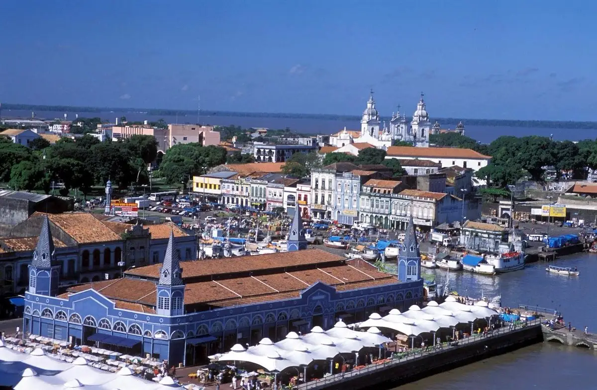

Ver-o-Peso Market
One of the largest open-air markets in Latin America, famous for regional fruits, seafood, herbs, and Amazonian culture.

Discover one of Brazil's most fascinating cities where history, culture, rivers, and delicious cuisine come together.
Explore AttractionsLocated in northern Brazil at the entrance of the Amazon River, Belém is known for its rich history, colonial architecture, vibrant markets, tropical cuisine, and beautiful waterfront. Visitors enjoy exploring museums, parks, historic churches, and experiencing the unique culture of the Brazilian Amazon.

One of the largest open-air markets in Latin America, famous for regional fruits, seafood, herbs, and Amazonian culture.

A restored riverfront warehouse district featuring restaurants, live music, shopping, and spectacular sunset views.

A beautiful ecological park showcasing Amazon wildlife, gardens, butterflies, and observation towers.
We hope you enjoy discovering Belém.